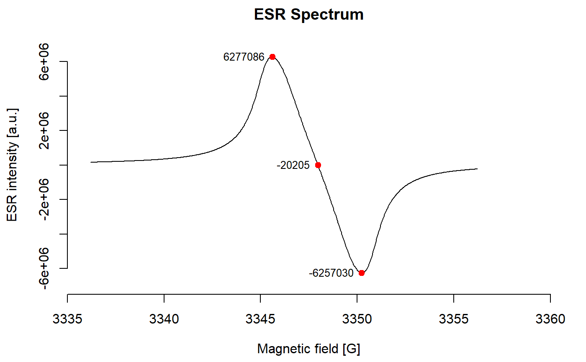
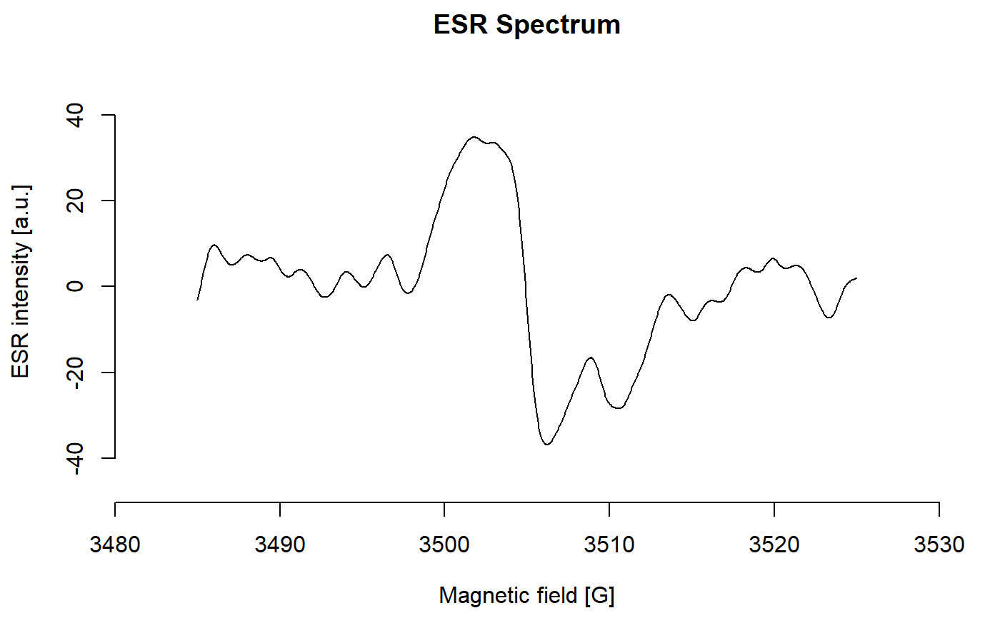
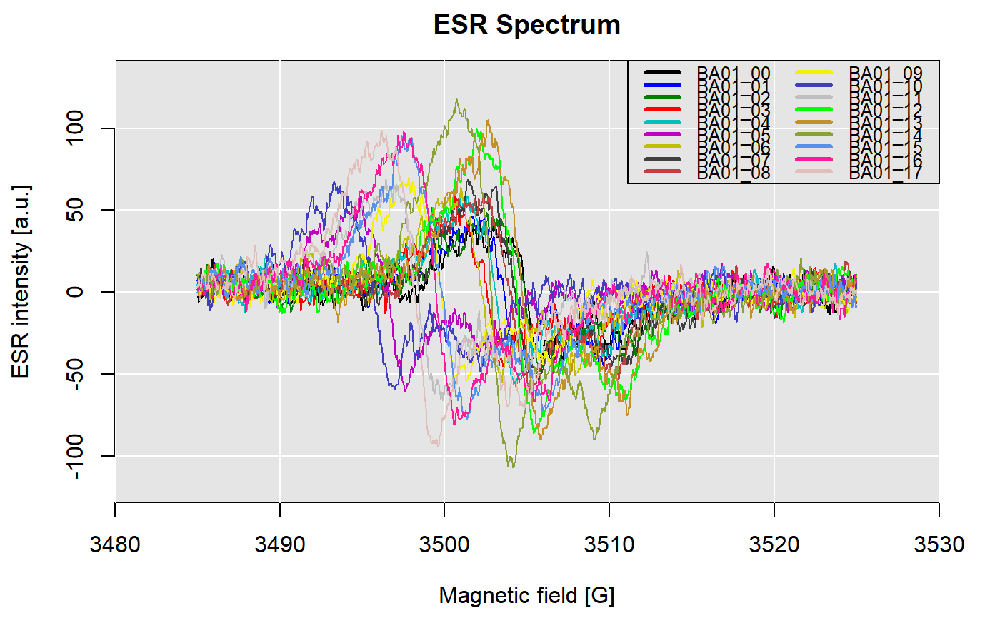
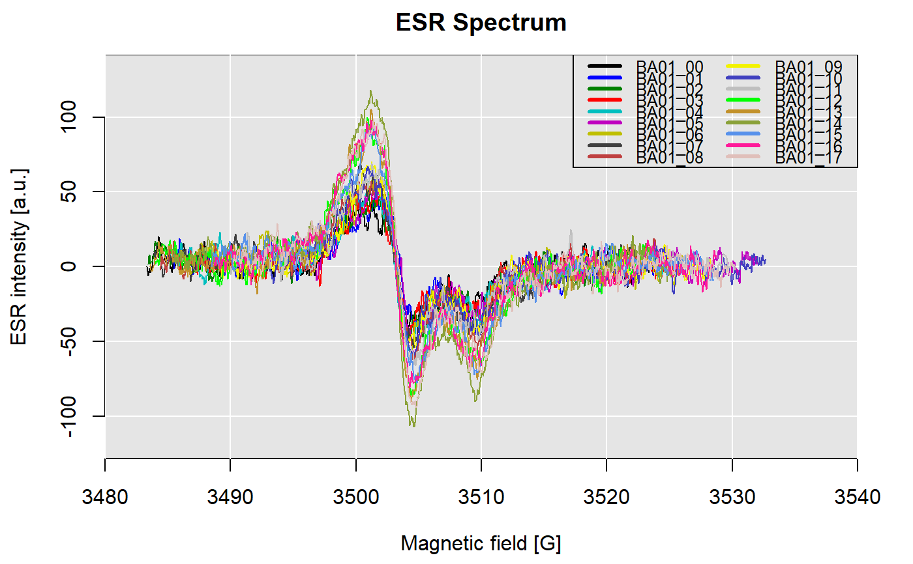

Function to plot an ESR spectrum and finding peaks using an automated
routine.
plot_Spectrum(data, stacked = FALSE, normalise = FALSE, crop = TRUE,
y_scale_factor = 2, vertical_lines, vertical_lines_manual,
col_bg = "grey90", manual_shift, manual_shift_global, gvalue = FALSE,
difference = FALSE, integrate = FALSE, smooth.spline = FALSE,
smooth.spline.df, smooth.spline.diff.df, overlay = TRUE,
auto.shift = FALSE, shift.method = "ccf", find.peaks = FALSE,
peak.range, peak.threshold = 10, peak.information = FALSE,
info = NULL, plot = TRUE, add = FALSE, ...)
Arguments
| data |
data.frame (required): data frame
with two columns for x=magnetic.field or g.value, y=ESR.intensity.
|
| stacked |
logical (with default):
If TRUE this function produces a stacked plot where each spectrum is
plotted on top of each other. Use y_scale_factor to adjust the y-axis
scaling. Defaults to FALSE.
|
| normalise |
logical (with default):
If TRUE each spectrum is normalised by its individual maximum intensity
value. This is useful to compare the spectrums structure by eliminating
relative intensity variations. Requires stacked = TRUE. Defaults to FALSE.
|
| crop |
logical (with default):
If TRUE all spectra are cropped to the specified xlim range before
applying any further signal processing (e.g. normalisation). Useful when
plotting spectra with different scan widths. Defaults to TRUE.
|
| y_scale_factor |
numeric (with default):
A positive single numeric value that determines the scaling of the y-axis when
stacked = TRUE. Lower values will bring the spectra closer to each other,
potentially making them overlap each other. Increasing the value will
increase the distance and flatten the spectra. Defaults to 2.
|
| vertical_lines |
numeric (optional):
Add vertical dashed lines at specified x-axis values. See abline().
|
| vertical_lines_manual |
list (optional):
A list of vectors of numeric values to draw custom vertical lines
in the plot. Each vector should be of the same length as the number of
spectra provided. Each value indicates where a vertical line is drawn
in the spectrum, starting from the bottom to the top. Example: data is
a list with three spectra. To connect the three spectra with a vertical line
use e.g. vertical_lines_manual = list(c(3455, 3460, 3456)). Useful, if
the spectra are not perfectly aligned and you want to connect a particular
are of interest with lines.
|
| col_bg |
character (with default):
If more than one spectrum is provided the background is grey90 by default.
|
| manual_shift |
numeric (optional):
If all of the auto.shift methods fail to properly align all of the
provided spectra use manual_shift to align them manually. This should be
a vector of negative or positive numeric values the same length as the
number of provided spectra. Example: data is a list with three spectra.
To shift the spectra use e.g. manual_shift = c(-2, 0, 0.2), which aligns
the first spectrum by -2 to the left and the third by 0.2 to the right.
|
| manual_shift_global |
numeric (optional):
The same as manual_shift, but shifting all spectra by one single value.
Useful to shift spectra according to a calibration measurement. The correction
is applied after individual shifts of manual_shift, so it is possible
to individually AND globally shift the spectra for proper alignment.
|
| gvalue |
logical (with default):
If TRUE and all spectra are of class ESR.Spectrum with information
on microwave frequency the magnetic field values are converted to g-values.
|
| difference |
logical (with default): plot first
derivative of the spectrum
|
| integrate |
logical (with default): plot integrand of the
spectrum
|
| smooth.spline |
logical (with default): fit a cubic
smoothing spline to supplied spectrum.
|
| smooth.spline.df |
integer: desired number of degrees of
freedom
|
| smooth.spline.diff.df |
integer: desired number of
degrees of freedom for splines of the first derivative
|
| overlay |
logical (with default): overlay actual data and
smoothing spline curve in one plot.
|
| auto.shift |
logical (with default): automatically shift
multiple spectra by their maximum peak. This uses smoothing splines for
better results.
|
| shift.method |
character (with default): when integral
the peaks are shifted by the maximum intensity of the integral.
Alternatively, deriv can be used to shift the spectra by the minimum of the
first derivative. By default, ccf is used which computes the
cross-correlation of two univariate series (see ccf).
|
| find.peaks |
logical (with default): find and plot peaks
(TRUE/FALSE).
|
| peak.range |
integer (with default): range of magnetic
field intensities or g-values in which peaks are picked from c(from,
to). If no values are provide the whole spectrum is analysed.
|
| peak.threshold |
integer (with default): threshold value
specifying the resolution of the peak finding routine (see details).
|
| peak.information |
logical (with default): plot peak
intensity values for peaks found by the automated routine
(TRUE/FALSE). Applies only when find.peaks = TRUE.
|
| info |
character: add information on experimental details
as subtitle
|
| plot |
logical (with default): show plot
(TRUE/FALSE).
|
| add |
logical (with default): whether derivatives and/or
integrands are added to the spectrum or are shown separately
(TRUE/FALSE).
|
| ... |
Further plot arguments to pass. |
Value
Returns terminal output and a plot. In addition, a list is returned
containing the following elements:
datalist containing the (modified) input data
splineslist
containing the spline objects
auto.peaksdata frame containing the
peak information (magnetic field and ESR intensity) found by the peak find
routine.
Details
Status
In progress
Note
In progress
See also
Examples
#> magnetic.field ESR.intensity
#> 1 3345.623 6277086
#> 3 3347.969 -20205
#> 2 3350.237 -6257030

##plot the mollusc (sample Ba01) natural ESR spectrum with a smoothing spline
plot_Spectrum(ExampleData.ESRspectra$Ba01_00,
smooth.spline = TRUE,
smooth.spline.df = 40,
overlay = TRUE)

##plot all ESR spectra of sample Ba01
plot_Spectrum(ExampleData.ESRspectra$Ba01)

##plot all ESR spectra of sample Ba01 and align curves by the max peak
plot_Spectrum(ExampleData.ESRspectra$Ba01,
auto.shift = TRUE)

##plot all ESR spectra of sample Ba01, use smoothing splines and
##align curves by the max peak
plot_Spectrum(ExampleData.ESRspectra$Ba01,
smooth.spline = TRUE,
smooth.spline.df = 40,
auto.shift = TRUE,
overlay = FALSE)